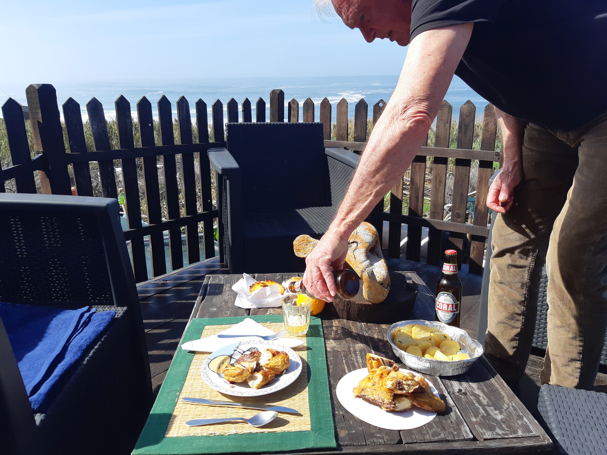
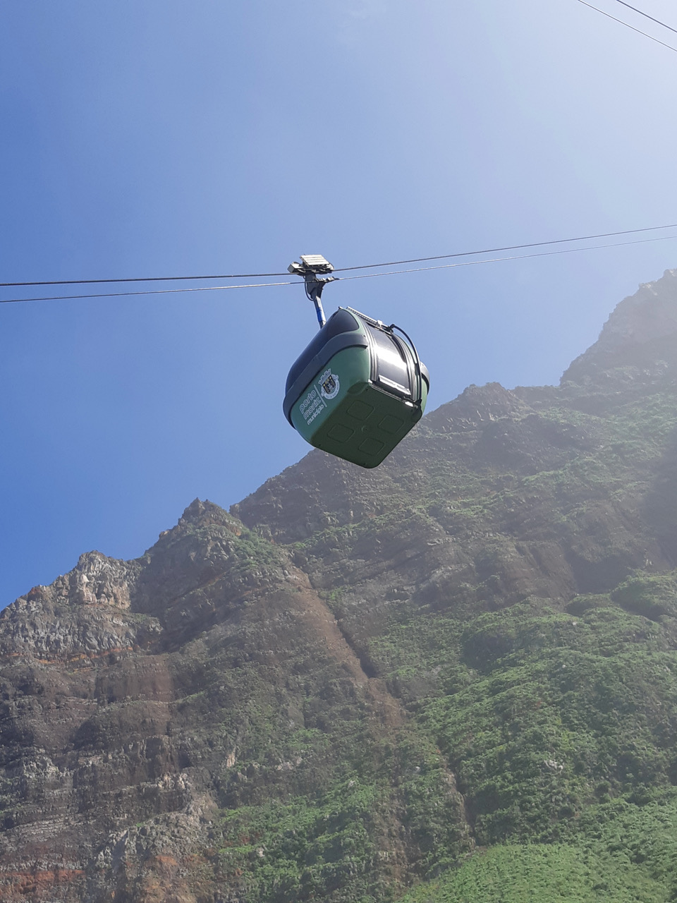
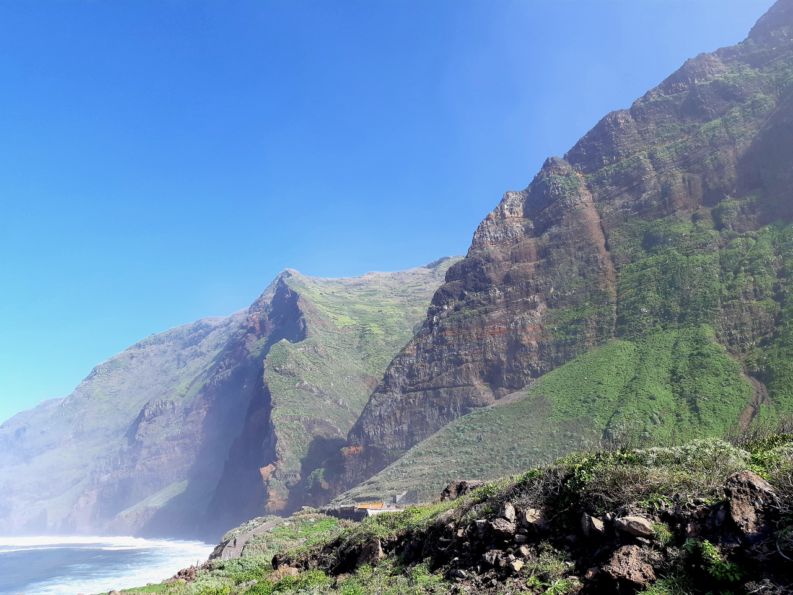

Madeira is an island that reveals itself from above. Except for a few stretches, the coastline rises steeply from the ocean, and rural settlements are most often perched three or four hundred meters above sea level, just a few dozen meters from the edge of the cliffs. The old roads, built on retaining walls, tilt nonchalantly over the void at every bend. I had never experienced such vertigo as during those four months of precautionary exile. Dan was driving the rental car, and from the passenger seat I felt a thousand prickling jolts each time I found myself on the exposed side of the road. The crest of each slope—lombada in Portuguese—ends in a miradouro, a lookout point suspended over the drop, best reached on foot, if at all.
The house we had rented on the northeastern coast overlooked the vastness of the ocean, beyond an apple orchard and a few rows of verdelho vines. The Miradouro da Boa Morte was just a short walk away, across abandoned terraces: a swell of land marked by a white cross and a simple iron railing, preventing an accidental fall three hundred meters below, where northern and southern currents met, stirring whirlpools, mist, and lingering clouds. It was like the romantic, desolate landscapes of Caspar David Friedrich, with those back-turned figures who seem to contemplate the view as if on the verge of yielding to it.

One windless afternoon in February, we came across signs for the cable car at Achada da Cruz, a few kilometers from the house. Curious, we made our way down toward the cliffs. There, a small shed stood beside a pylon beneath which we saw a cabin—barely large enough for four people—plunge into the void. In parts of the island where the sheer cliff face makes access to the shore impossible, cable cars have replaced old mule tracks that once required hours of difficult walking. From the railing, I followed with my eyes—and a tightening in my stomach—the slow descent of that glassy gull’s egg suspended between the sky and the faintly rippled surface of the ocean.
The operator explained that it was mainly used by farmers tending plots near the shore. To soften the somewhat dismissive impression of what he had just said, he added that it was the steepest cable car in Europe—four hundred and fifty meters of vertical drop—and that not even in the French Alps would we find its equal. Dan and I exchanged a glance. By then we were used to the locals’ fondness for hyperbole. Seeing us hesitate, he mentioned that the last ascent would be in half an hour; after that, he would break for lunch. I had already taken a cable car once before, on a long descent from Monte to central Funchal, buffeted by the wind above dense housing and deep ravines, and had survived the experience, with little desire to repeat it. At least this time there was no wind—it would be less terrifying. “Austrian engineering,” the operator reassured us as he led us to the cabin.

Sitting on the side facing the rock wall proved a tactical mistake: I watched the cabin hesitate at the edge like a billiard ball before dropping into a pocket and beginning its descent, gently swaying in the void. The relief of reaching the bottom was twofold. The strip of land at the base of the cliff offered shelter and a mild, almost paradisiacal temperature among small plots enclosed by driftwood fences, huts, and clusters of banana trees. There was no place to eat in such a remote spot, with neither electricity nor running water.
We decided to return for a picnic—an experience that would crown our stay. On the way, we bought pastéis de bacalhau, still warm, pão de batata fatiado, roast chicken, olives, and a bottle of wine. The surprise came when we descended again in the company of a maintenance worker who also owned a plot down there. This time I sat on the side overlooking the drop but facing the rock wall, and distracted myself by listening to his explanations. We arrived at the bottom on a sunny afternoon, with a restless sea, and sat on the only bench facing the breaking waves. The man called out to us, gesturing for us to come. We gathered our provisions and followed him to his shed, which had solar panels to heat collected rainwater and a small wind turbine to generate a bit of electricity.

“You can have your picnic on my terrace,” he said, “sit comfortably at the table. I won’t disturb you—I’ve got work to do in the garden.”